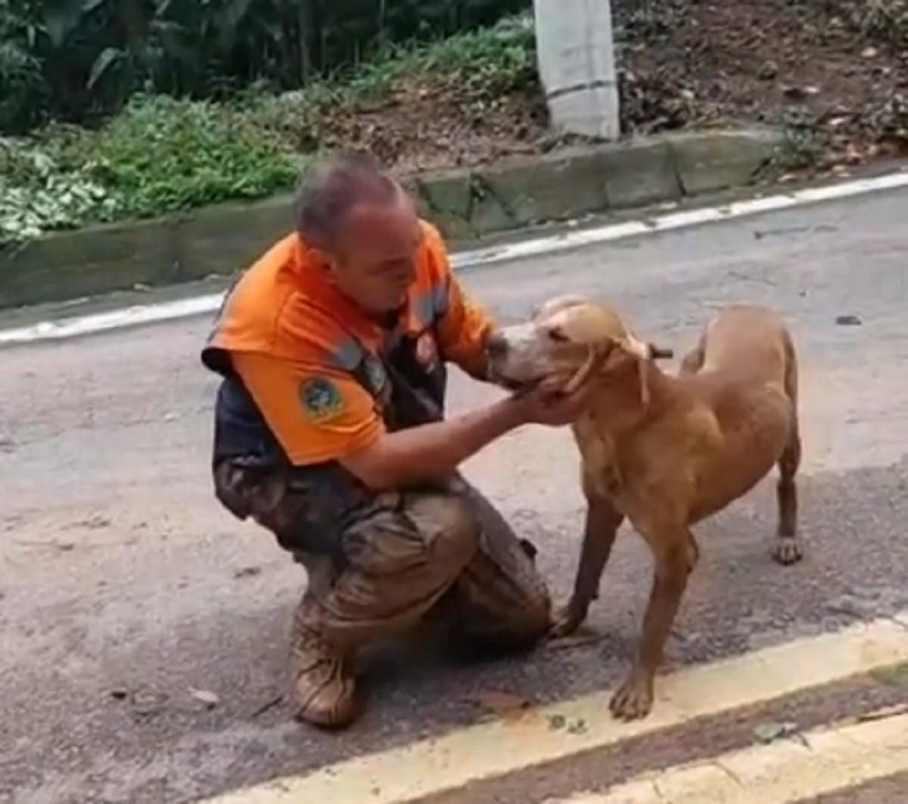

Veja os cao de rua
Aqui mora a chance de encontrar seu melhor amigo

Somos uma ONG de proteção animal voluntária e sobrevivemos graças ao apoio de pessoas como você que acreditam em nosso trabalho.

Fundada em janeiro de 2017, a Associação Amigos Em Ação Patas Solidárias é uma Organização Não Governamental que tem como missão resgatar e cuidar de animais vítimas de abandono e maus tratos.
Após o resgate, o compromisso de proporcionar um lar com muito amor e carinho para os resgatados. Mantemos um abrigo com cerca de 400 cães, todos resgatados das ruas, onde eles são protegidos, alimentados e aguardam pela chance de serem adotados.
Aqui mora a chance de encontrar seu melhor amigo